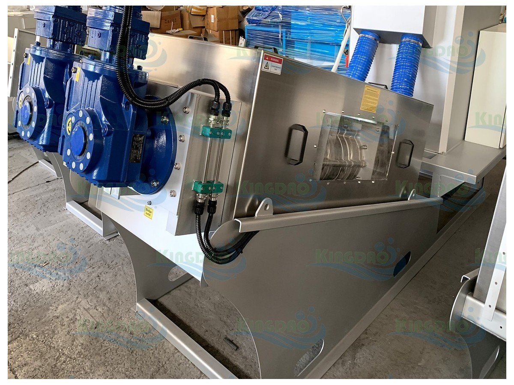

In short: A multi-disc screw press dewaters sludge to typically 20–30% dry solids at 6–600 kg DS/h, in 14 models, in 304 stainless steel. It runs unattended — no filter cloth, no wash water, about 0.1 kW per kg DS. Size it from the dry solids load, not from the sludge flow alone.
Sludge is flocculated with polymer and fed into the thickening section, where gravity separates free water through the gaps between the fixed and moving rings. The dewatered sludge is then conveyed and pressed along the screw shaft in the dewatering section, where the gradually decreasing pitch and the outlet resistance build the pressure that squeezes out the remaining water.
Because the rings are self-cleaning — the moving rings wipe the fixed rings on every revolution — the machine does not blind over the way a belt or plate press does. There is no filter cloth to replace and no wash water to supply.
Size the machine from the dry solids load, not from the sludge flow alone. Daily sludge volume ÷ 24 gives m³/h; read across at your inlet solids concentration; then take the model one step above and leave 20–30% margin.
Worked example: 200 m³/d of sludge at 5,000 mg/L → 8.3 m³/h → model 302 (12 m³/h at 5,000 mg/L) with margin.

Length, width and height all move with the screw configuration — confirm against a GA drawing before you cast the plinth.
| Model | Screw spec | Cake outlet height (mm) | L (mm) | W (mm) | H (mm) | Dry weight (kg) | Operating weight (kg) |
|---|---|---|---|---|---|---|---|
| 101 | 101 × 1 | 230 | 1830 | 730 | 1050 | 150 | 230 |
| 131 | 130 × 1 | 280 | 2050 | 800 | 1150 | 180 | 280 |
| 132 | 130 × 2 | 290 | 2050 | 850 | 1150 | 360 | 400 |
| 201 | 200 × 1 | 470 | 2500 | 810 | 1480 | 315 | 420 |
| 202 | 200 × 2 | 470 | 2770 | 1010 | 1480 | 515 | 680 |
| 251 | 250 × 1 | 480 | 2770 | 850 | 1600 | 450 | 700 |
| 301 | 300 × 1 | 660 | 3300 | 950 | 1800 | 568 | 1200 |
| 302 | 300 × 2 | 680 | 3560 | 1270 | 1830 | 968 | 2030 |
| 303 | 300 × 3 | 680 | 3780 | 1450 | 1830 | 1258 | 2750 |
| 351 | 350 × 1 | 620 | 3500 | 980 | 1950 | 800 | 1100 |
| 352 | 350 × 2 | 620 | 3700 | 1400 | 1950 | 1400 | 3300 |
| 353 | 350 × 3 | 620 | 3900 | 1620 | 1950 | 2200 | 3500 |
| 401 | 400 × 1 | 680 | 3850 | 1100 | 2100 | 1085 | 2400 |
| 402 | 400 × 2 | 690 | 4250 | 1550 | 2100 | 2200 | 4200 |
| 403 | 400 × 3 | 660 | 4530 | 1800 | 2100 | 3300 | 6300 |
| 404 | 400 × 4 | 690 | 4900 | 2690 | 2100 | 4500 | 7200 |
Cake outlet height is measured from floor to the discharge plate. Weight is machine only; operating weight includes the water in the tanks.
Wetted parts are stainless steel throughout — there is no coated carbon steel in the sludge path.
| No. | Item | Material | Note |
|---|---|---|---|
| 1 | Dewatering body | SS304 | — |
| 2 | Cake discharge plate | SS304 | 260 mm (131) / 400 mm (132) |
| 3 | Body base plate | SS304 | 4 × Ø12 holes |
| 4 | Metering tank | SS304 | L200 × W250 × H450 mm |
| 5 | Flocculation mixing tank | SS304 | L385 × W380 / L430 × W430 × H550 mm |
| 6 | Tank mixer | SS304 | Helical type |
| 7 | Level adjusting pipe | UPVC | DN80 |
| 8 | Water supply solenoid valve | SS304 | DN20 |
| 9 | Level switch | SS304 | — |
| 10 | Control panel | SS304 | Optional |
| No. | Connection | Size | Fitting |
|---|---|---|---|
| N-1 | Sludge inlet | DN40 | PVC socket |
| N-2 | Filtrate outlet | DN80 | SS304 female thread |
| N-3 | Flushing water inlet | DN20 | PVC socket |
| N-4 | Polymer solution inlet | DN20 | PVC socket |
| N-5 | Overflow | DN80 | PVC socket |
| N-6 | Mixing tank drain | DN50 | PVC ball valve |
| Parameter | Model 131 | Model 132 |
|---|---|---|
| Capacity | 6 – 10 kg DS/h | 12 – 20 kg DS/h |
| Power draw | 0.2 kWh | 0.3 kWh |
| Flushing water | 24 L/h | 24 L/h |
| Polymer dose | 0.3 % of DS | 0.3 % of DS |
| Maintenance attention | about 5 min/day | about 5 min/day |
| Supply water pressure | 0.1 – 0.2 MPa | 0.1 – 0.2 MPa |
| Cake outlet height | 280 mm | 290 mm |
| Dimensions L×W×H | 2050 × 800 × 1150 mm | 2050 × 850 × 1150 mm |
| Dry weight | 182 kg | 360 kg |
| Operating weight | 280 kg | 400 kg |
Sizing rule of thumb. Take your dry-solids load in kg DS/h and read across the capacity table. At 10,000 mg/L, model 131 handles 1 m³/h of sludge and needs roughly 30 L/h of polymer solution; model 132 handles 2 m³/h and 60 L/h. Size the feed and dosing pumps slightly above the theoretical value, and ask us for a GA drawing before final design — specifications are updated without prior notice.
At low concentrations the limit is hydraulic; at high concentrations it is the dry solids load. Both are shown, which is why the table reads the way it does.
| Model | DS capacity kg/h | 2,000 mg/L | 5,000 mg/L | 10,000 mg/L | 20,000 mg/L | 25,000 mg/L | 50,000 mg/L |
|---|---|---|---|---|---|---|---|
| 131 | 6-10 | 3 | 1.2 | 1.0 | 0.5 | 0.4 | 0.2 |
| 132 | 12-20 | 6 | 2.4 | 2.0 | 1.0 | 0.8 | 0.4 |
| 201 | 9-15 | 4.5 | 1.8 | 1.5 | 0.75 | 0.6 | 0.3 |
| 202 | 18-30 | 9 | 3.6 | 3.0 | 1.5 | 1.2 | 0.6 |
| 251 | 20-35 | 10 | 4.0 | 3.5 | 1.75 | 1.4 | 0.7 |
| 301 | 30-50 | 15 | 6.0 | 5.0 | 2.5 | 2.0 | 1.0 |
| 302 | 60-100 | 30 | 12 | 10 | 5.0 | 4.0 | 2.0 |
| 303 | 90-150 | 45 | 18 | 15 | 7.5 | 6.0 | 3.0 |
| 351 | 60-100 | 30 | 12 | 10 | 5.0 | 4.0 | 2.0 |
| 352 | 120-200 | 60 | 24 | 20 | 10 | 8.0 | 4.0 |
| 401 | 90-150 | 45 | 18 | 15 | 7.5 | 6.0 | 3.0 |
| 402 | 180-300 | 90 | 36 | 30 | 15 | 12 | 6.0 |
| 403 | 270-450 | 135 | 54 | 45 | 22.5 | 18 | 9.0 |
| 404 | 360-600 | 180 | 72 | 60 | 30 | 24 | 12 |
Figures are theoretical. Select the model slightly above the calculated value, and confirm against the approved drawing before ordering. Actual capacity depends on sludge characteristics, flocculation and polymer dosing.
Two numbers are enough for us to name the model and send the dimension drawing.
Typically 20–30% dry solids, depending on the sludge type and the polymer dose. Mixed and digested municipal sludge sits at the higher end; oily or fibrous industrial sludge at the lower end.
No. The screw turns slowly and the moving rings wipe the fixed rings on every revolution, so the machine is self-cleaning and runs 24 hours with a single daily check. There is no filter cloth to replace and no wash water to supply.
From the dry solids load in kg DS/h, not from the sludge flow alone. Daily sludge volume divided by 24 gives m³/h; read across at your inlet solids concentration, then take the model one step above and leave margin. Example: 200 m³/d at 5,000 mg/L is 8.3 m³/h, which lands on model 302 (12 m³/h at 5,000 mg/L) with margin.
Polymer preparation and dosing, a feed pump, and a control cabinet. All three can be supplied as a skid with the press, or the press alone if you already have them on site.
About 0.1 kW per kg DS, with polymer as the main consumable. Power draw is low because the screw rotates slowly; the polymer dose is set by the sludge, not by the machine.